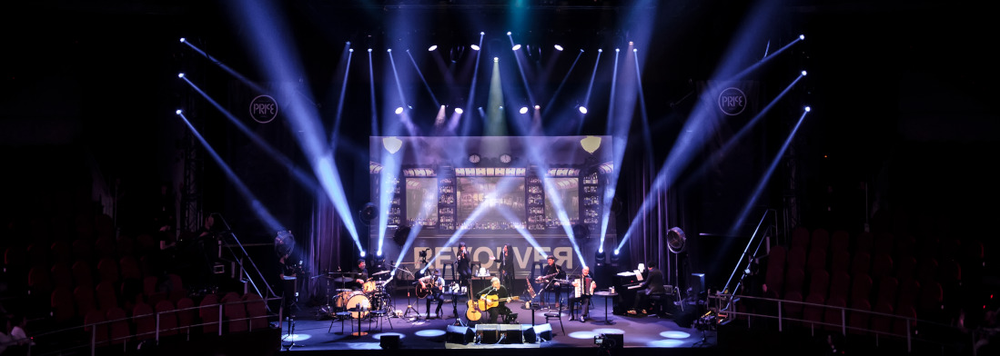

Banda española de rock formada en 1988 en Valencia
Grandes éxitos de Revólver
| Año | Disco |
|---|---|
| 1990 | Revolver |
| 1992 | Si no hubiera que correr |
| 1993 | Básico |
| 1995 | El dorado |
| 1996 | Calle mayor |
| 1997 | Básico 2 |
| 2000 | Sur |
| 2002 | 8:30 a.m. |
| 2002 | Rarezas |
| 2002 | Grandes éxitos |
| 2004 | Mestizo |
| 2006 | Básico 3 |
| 2008 | 21 gramos |
| 2010 | Que veinte años no es nada |
| 2011 | Argán |
| 2013 | Enjoy |
| 2015 | Babilonia |
| 2017 | Capitol |
| 2019 | Básico IV |
| "Calle Mayor" fue el álbum más exitoso | |